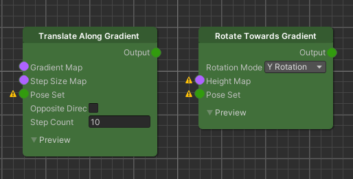
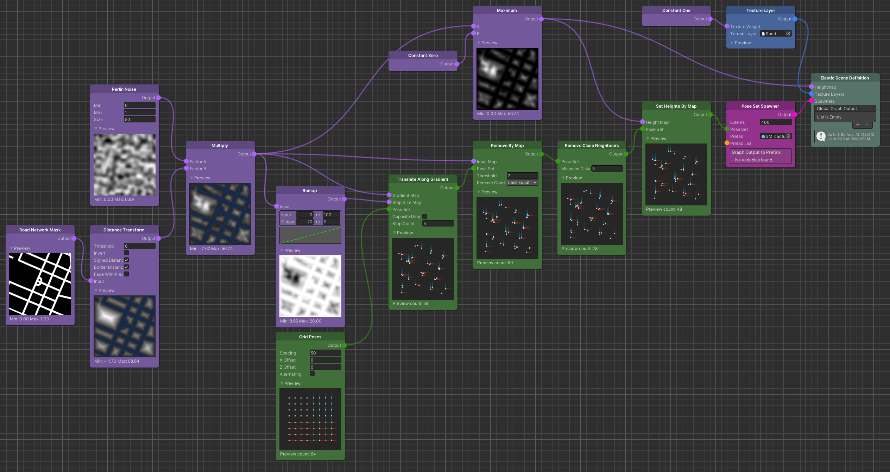
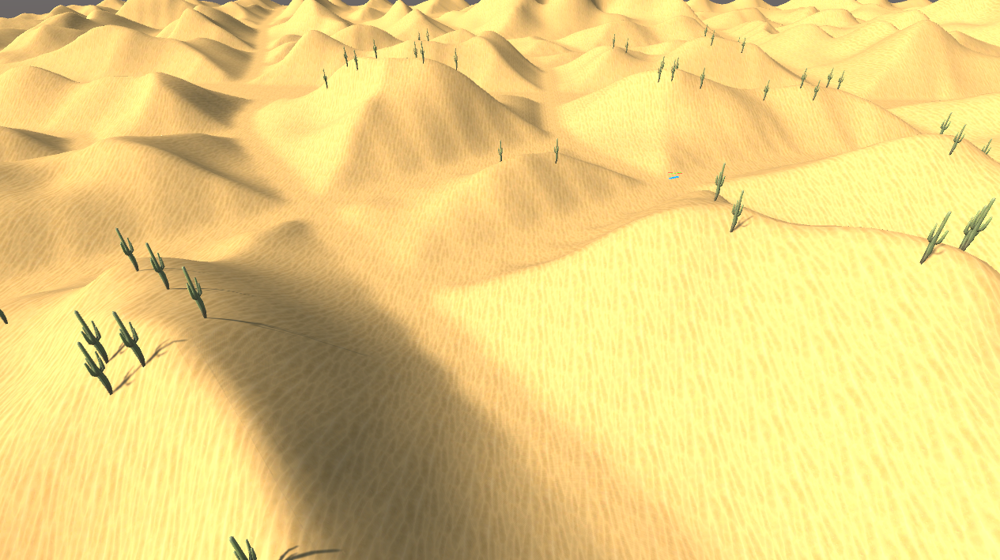
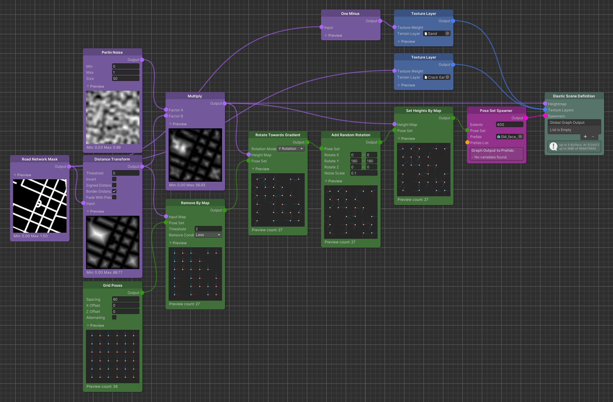
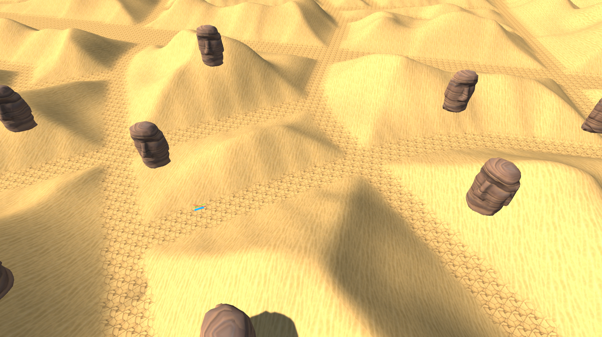

Poses & Gradients
The Elastic SDK ships with a variety of nodes to create an initial Pose Set, such as OSM Poses. While working with such real-world Poses, can be an easy way to get good reference points for a spawning process, world compositions often require positions that are more flexible than fixed geo locations.
We have already seen that the Elastic Graph System enables us to manipulate generated Pose Sets by using Pose Set Modifiers. However, when we want to manipulate the positions and rotations of an initial set of Poses, in most cases we want to do this in respect of our elastic environment. We introduce this principle with gradient based Pose Set Modifiers.

Translate Along Gradient
One very common use case for gradient based Pose Set modification is to move Poses along the direction of a gradient.
The gradient itself can be derived from your terrain heightmap or even any other map.
As an example, imagine you want to distribute your objects in a way so that they have a high probability to end up close
to the hilltops of your terrain, so that the player may see them better throughout the experience. This is a perfect use
case for the Translate Along Gradient node.

The Translate Along Gradient node has 3 different node inputs. First the Gradient Map input. Here we connect the Map from which the gradient direction should be derived. The basic idea is, that we move Pose positions towards the brightest local area of this Map input along the increasing values of its gradient.
The Step Size Map on the other hand determines the amount a Pose moves from its current position towards the gradient direction.
The Pose Set input which represents the set of poses that we want to translate.
Input Pre-Processing And Node Settings
We start with an initial set of Poses using a Grid Poses node. This will be the Pose Set input.
For the gradient, we take a Distance Transform of the Road Network Mask. Then we multiply with a Perlin Noise to
introduce some variation.
For the Distance Transform it is important that we check the Signed Distance parameter, so
that we get non-zero values on the road as well.
This will act as the Gradient Map input.
The Step Size Map input can be derived from the result of the multiplication. The basic behavior we want from this example is that Poses farther away from the hilltops move larger steps towards them. As you can see in the example, we do this by remapping the Map values from an input range of 0..100 to 20..0. This translates to clamping the Map values to the input range and projecting it to the output range. So the results will be that Poses located on the road will move with the biggest steps towards the hilltops, since the signed (negative) road values from the Distance Transform get clamped to 0 and then mapped to 20.
The Step Count parameter on the Translate Along Gradient node represents the number of iteration the underlying algorithm runs. So for each run, Poses move one "step" further on the Gradient Map. The size of the step per run, is derived from the Step Size Map.
Important
It is important to understand that there is no guarantee for your Poses to actually end up at your desired location. This is due to the fact that the underlying gradient descent algorithm iteratively moves the Poses to the local minima of your Gradient Map. However, based on your Step Size Map and Step Count, they might very well not move far enough or overshoot. So the general rule is, that a higher Step Count will give you more accurate results but comes at a higher performance cost.
This wraps up the input for the Translate Along Gradient node and it is ready to generate the proper output.
Output Post-Processing
The output of the Translate Along Gradient node is not always accurate. As stated above, depending on your Step Size
Map and Step Count, Poses might overshoot the area where you want them to end up in. That also means that they might
end up on the road again.
Knowing this, we have to further process the node output a bit more.
We basically want to eliminate all remaining Poses that did not end up where we wanted them to be. Thus we use a Remove
By Map node to on the multiplication result to remove every Poses that ended up on the road i.e. overshot the hilltops
to far in the translation process.
For most objects that we spawn at the Pose positions it is also important that they have enough spacing towards
neighbouring Poses. The Remove Close Neighbours nodes will enforce exactly this, by discarding Poses that are too close
to neighbouring Poses.
The final step for the generated Pose Set is to place them at the height of our terrain. First the final terrain heightmap is generated by clamping the negative values of the multiplication result back to 0, using a Maximum node, since the road should be flat. The resulting Map is the Heightmap of our graph output, as well as the _ Height Map_ input if the Set Heights By Map node.
Finally this generates the output that we use as the Pose Set for the the Pose Set Spawner, to instantiate cacti only around hilltop areas.

Rotate Towards Gradient
Another common use case for gradient base Pose Set modification is to rotate object towards the direction of a terrain
slope. To achieve this, we can use the Rotate Towards Gradient node. What this node will do is rotate the Poses towards
the direction of the gradient that is derived from the Gradient Map input.
The following example shows how some rock faces are rotated towards the hilltops of the terrain.

The Rotate Towards Gradient node has 2 node inputs. First the Gradient Map input. Here we connect the Map from which the gradient direction should be derived. The basic idea is, that we rotate Poses towards the brightest local area of this Map input along the increasing values of its gradient.
The Pose Set input which represents the set of poses that we want to rotate.
The Rotation Mode parameter tells the node around which axes it should rotate the Poses.
Input Pre-Processing And Node Settings
We start with an initial set of Poses from a Grid Poses node. This will be the Pose Set input.
This time we can remove Pose that are located on the road before we use the Pose Set for the gradient rotation, since we are not moving anything. This will save some performance cost for subsequent nodes.
For the gradient, we take a Distance Transform of the Road Network Mask. Then we multiply with a Perlin Noise to introduce some variation.
On the Rotate Towards Gradient node itself, we set the Rotation Mode parameter to "Y Rotation"
Output Post-Processing
The new Pose rotations that the output of the node generates are now oriented towards the hilltops of the terrain on their y-axis. This means that the objects that are spawned, will face the hill side. Maybe it is more interesting to let them face the opposite direction. To achieve this, a Add Random Rotation node can be added with the Rotate Y parameter set to 180 on both ends.
Tip
This is an example where good Prefab composition can safe some performance cost in the Elastic Graph. Instead of using the Add Random Rotation node, the game object itself could be rotated inside the Prefab.
The last thing to do is setting the Poses' height to the height of the terrain so they are ready for spawning.

Tip
If you want the game objects to face the road directly, instead of the direction of the terrain slope, you can use the Distance Transform of the Road Network Mask for the Gradient Map input instead.